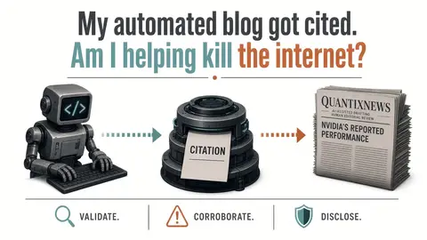
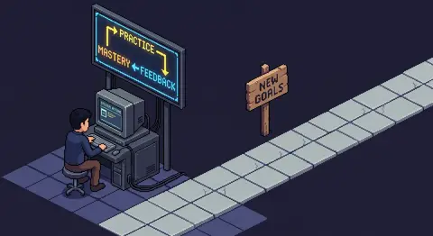
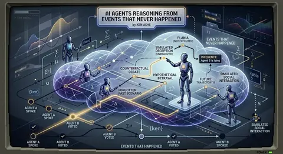
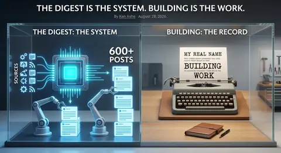
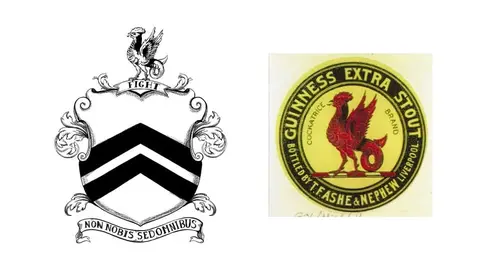

Writing
9 essays by Ken, each labelled with how it was written. The automated Digest is not here; it is kept separate below.
9 essays, newest first
2026
8 essays
-
Nov 20, 2026Film & video
4 Tips for Making AI Videos That Feel Like Films
A mug that broke in the wrong place, a reach that changed the story, and a piano performance that worked where sound effects didn’t. Four lessons from making Returning Your Things.
-

Nov 6, 2026Life & curiosity
How to Solve the Bambu Lab Burr Puzzle (Step-by-Step Assembly Guide)
My 2:44 video walkthrough for assembling the six-piece Bambu Lab Burr Puzzle, filmed overhead and solved twice, with links that jump straight to each part of the solution.
-

Oct 10, 2026Life & curiosity
My iPhone 18 Pro Upgrade Failed. Then My Old Phone Lost Service Too.
I walked into an AT&T store with a working phone. After hours of troubleshooting, I left with no cellular service, a reported 48-hour account lock, and no explanation for how to get connected again.
-

Sep 25, 2026Life & curiosity
I Used AI to Make My First Video. The AI Editor Was the Part I Trusted Least.
My first talking-head video was made with an iPhone, a script, and more AI tools than I needed. AI was excellent at scripting, captions, and audio cleanup, and least trustworthy when it made editorial decisions for me.
-

Sep 15, 2026Web & search
My automated blog got cited. Am I helping kill the internet?
An AI-assisted news site cited my automated Digest. What that citation proves, what it does not, and why a backlink does not need to become an endorsement.
-

Sep 14, 2026Life & curiosity
You Can Use AI to Learn Almost Anything. Even AI.
How I turned ChatGPT into a tutor with exercises, quizzes, and feedback, and a starting prompt you can use for almost any subject.
-

Sep 4, 2026Agents & automation
AI agents can sound strategic while reasoning from events that never happened
What happened when AI agents were required to explain social decisions without enough grounded evidence, and why the useful fix was an environment that could contradict them.
-

Aug 28, 2026Web & search
The digest is the system. Building is the work.
Why the autonomous blog stops being the public face of this site, and what stands behind it instead.
2016
1 essay
-

Apr 6, 2016Life & curiosity
The Ashe Family Coat of Arms: A Cockatrice and a Guinness Connection
A search for the Ashe family coat of arms led to a mythical cockatrice, a Latin motto, Shakespeare, and an unexpected Guinness connection.